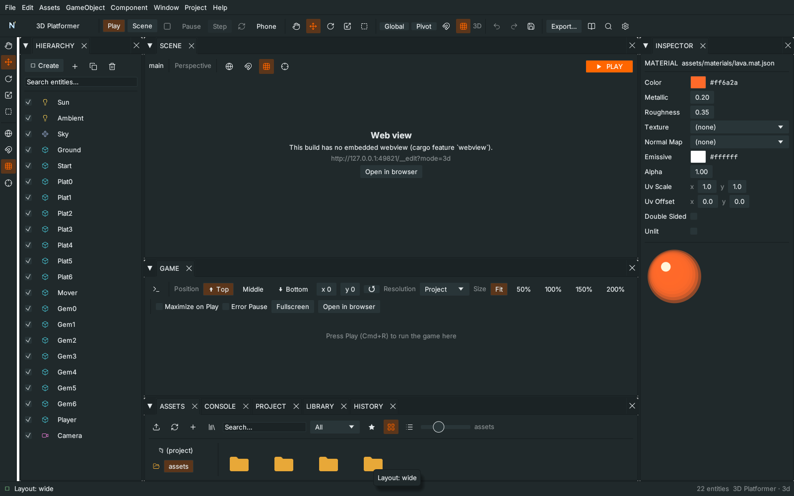
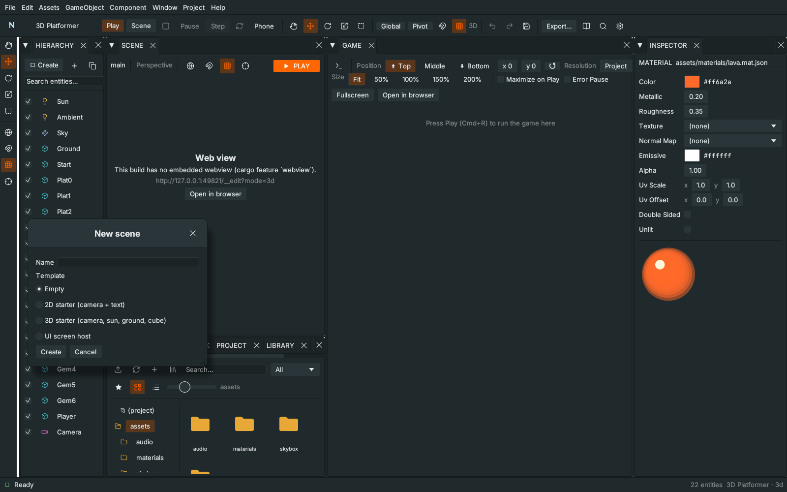
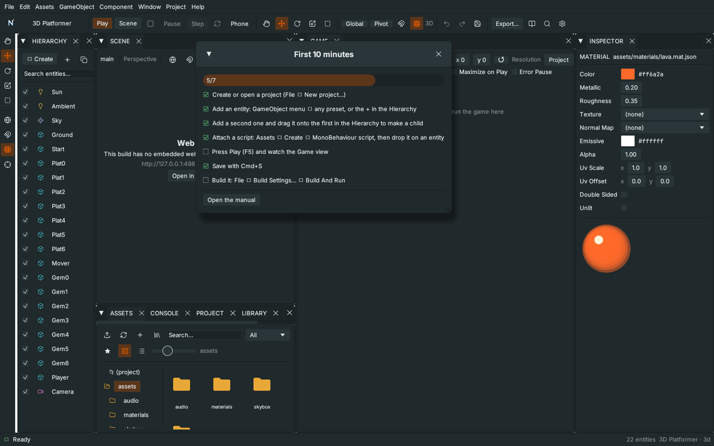

Unity-style workflow
Nord Engine edits the way Unity does: Hierarchy, Inspector, Project, a Scene view and a Game view, with prefabs, material assets and Build Settings. This chapter is the quick tour. Screenshots show the native editor panels; the Scene and Game views are native web views that appear in the same places in the real window.

Layouts and menus#
Window ▸ Layout has Unity 2 by 3, Unity Wide (Game under Scene) and Unity Tall, plus the earlier 2D, 3D, Coding and Visual presets. Drag any tab to rearrange; the layout is remembered.

The menu bar follows Unity: File (New scene, Build Settings), Edit, Assets (Create ▸ folder, script, MonoBehaviour / Singleton / GameManager script, UI screen, graph, material), GameObject (every preset: cube, sphere, camera, light, UI, spawner…), Component (adds a component to the selected entity), Window (panels and layouts), Project (Play, Validate, Export) and Help.
The Scene view#
| Key | Tool |
|---|---|
| Q | Hand: drag to pan |
| W / E / R | Move / Rotate / Scale |
| T | Rect |
| F / Shift+F | Frame selected / Frame all |
- Navigation (3D): Alt+left-drag orbits, Alt+Cmd+left-drag or middle-drag pans, the wheel zooms, right-drag orbits and WASDQE flies. 2D: Alt+left-drag or middle-drag pans, the wheel zooms.
- Local / Global and Pivot / Center toggles sit in the toolbar and on the tool rail. Local makes the move and rotate gizmos follow the object. (Center is stored for later; it has no effect yet.)
- Snapping: the magnet button turns snapping on; hold Ctrl/Cmd while dragging to flip it for one drag. Step sizes are in Settings.
- Selecting: click, Shift/Ctrl+click to add or remove, and in 2D drag on empty space for a marquee. Selected objects are outlined. A drag or gizmo still moves only the main selected object.
- Drag an asset from Assets over the Scene view to see a ghost; drop it to create an entity there (snapping applies).
- The bar above the Scene has the scene name, projection, a Gizmos ▾ menu (grid, camera/light icons, collider outlines), the Local/Global, snap and frame buttons, and a big Play button.
Inspector, Hierarchy and prefabs#
Each Hierarchy row has an Active checkbox; prefab instances are blue. Every Inspector component has a ⋮ menu (Reset, Copy / Paste values, Move up / down, Docs, Remove), and + Add component is searchable. The padlock at the top keeps the Inspector on one entity while you click around. Under Signals, a ▾ next to the method box lists the methods found in the target's scripts.
Prefabs: right-click an entity ▸ Create prefab, or drag it from the Hierarchy onto the Assets panel. The entity becomes an instance. Changed fields show a blue marker and a revert button; the Inspector offers Apply all (write the instance's overrides into the prefab file), Revert all overrides, Unpack and Unpack completely (also unpacks nested prefabs).
Prefab mode and variants: right-click a prefab in Assets (or press Open prefab on an instance) to edit it on its own; the bar above the Scene shows ◀ Scene › Prefab: name and leaving saves automatically. Create variant makes a new prefab that points at the original (variantOf) and stores only its own overrides, so later changes to the original flow into the variant.
Several objects at once: select more than one entity and the Inspector shows Active and Transform for all of them (mixed values show "—"; typing a value sets it on every one) and Add component to all.
Materials and import settings#
Assets ▸ Create ▸ Material makes a *.mat.json file. Select it to edit it in the Inspector, then set a material component's asset field to share it.

Select an image to set Filter (nearest = crisp pixels) and Wrap; select a model to set its Scale. Settings are stored next to the file as <name>.meta.json. In Assets, the ★ button filters to your favourites (right-click ▸ Favourite) and right-click ▸ Find references searches the project.
New scene, Build Settings and the Game view#
File ▸ New scene… asks for a name and a template (empty, 2D starter, 3D starter, UI host).

File ▸ Build Settings… (Shift+Cmd+B) lists the scenes: untick a scene to leave it out of web exports; the radio sets the start scene (always included). Build exports; Build And Run exports a single-file page and opens it. Desktop apps use the Desktop app dialog; Android and iOS are planned.

The Game view toolbar has a Resolution drop-down (phone, 16:9, 4:3, portrait…), a scale slider, Maximize on Play, Error Pause (pauses the game when an error is logged), a 📷 screenshot button (saved in screenshots/) and Stats (an fps overlay).
Profiler and play-mode edits: Window ▸ Profiler shows fps, a frame-time graph, object count, draw calls, memory and the slowest event-sheet blocks of the running game. While playing, the Inspector edits the live entity; Apply to scene writes its transform, active flag and existing field values into the saved scene.
Tools: event sheets have Find in sheet; the node graph has Group, a minimap, Docs (F1) and Arrange; the UI Designer has an anchor preset grid and Copy / Paste (Ctrl/Cmd+C / V).
Shortcuts and the checklist#
Settings lists the default shortcuts. Help ▸ First 10 minutes shows a checklist that ticks itself as you make an entity, attach a script, press Play, save and build.

Writing scripts the Unity way#
See Unity-style scripting in Scripting: MonoBehaviour, Singleton, GameManager, coroutines, Mathf, Vector3, Time, Input.GetAxis and more, with ready-made script templates in Assets ▸ Create.